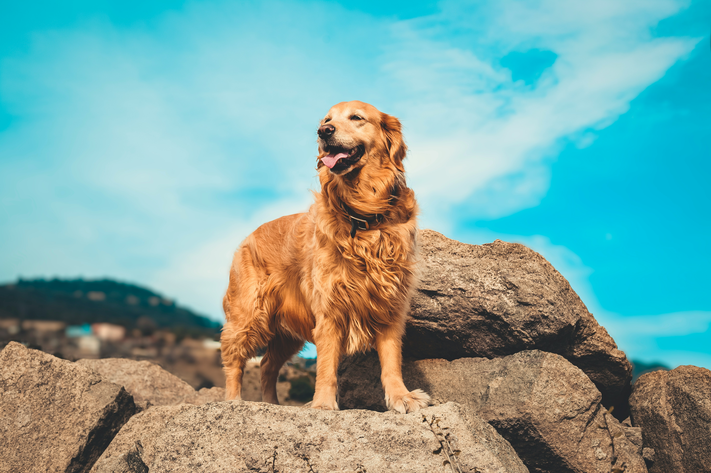

- Golden Retriever
- Border Collie
- Bernese Mountain Dog
- Norwegian Forest
- Siberian Forest
- American Curl
About Golden Retrievers!

History of Golden Retrievers
Golden Retrievers were developed in Scotland in the 19th century initially as hunting dogs.
Their primary role was to retrieve game for hunters, doing so gently without harming the catch, thanks to their soft mouths.
Today, they are primarily loved as companion animals and sometimes serve as rescue dogs or assistance dogs for the disabled.
Characteristics
Golden Retrievers are known for being friendly, loyal, and obedient.
They are highly intelligent and trainable due to their eagerness to please their owners.
They have a sturdy build and long coats, and they thrive on active living.
Webbed Feet
Golden Retrievers have webbed feet that allow them to move efficiently in water,
enhancing their ability to perform in aquatic hunting and rescue operations.
The webbing helps increase the surface area of their feet in water, aiding in more powerful swimming.
Cautions
Like many large breeds, Golden Retrievers require ample exercise. Regular grooming and care are also necessary.
This breed is sociable, so it is not recommended to leave them alone for long periods.
Common Health Issues
Golden Retrievers can have some genetic health problems, such as hip dysplasia, elbow dysplasia, heart diseases,
and they are prone to high rates of cancer.
Regular health check-ups and proper nutrition are essential to manage these risks.